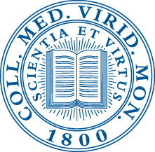
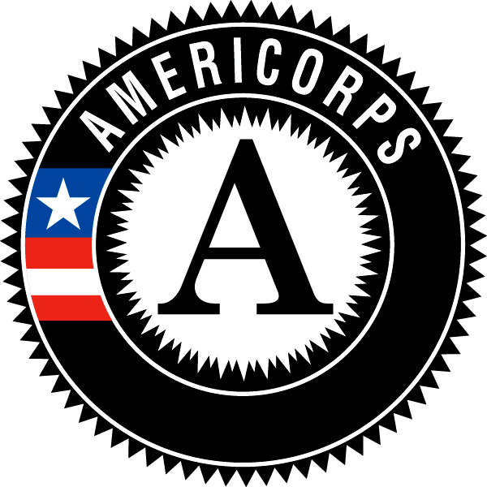

Anna Victoria Hopper
Washington, DC Phone: +1 (713) 303-6611 Email: anniehopper@mac.comEducation
Middlebury College: Middlebury, VT
 Bachelor of Arts, Major in Environmental Studies: Conservation Biology;Minor in Spanish; February 2015
- Graduated magna cum laude
- GPA: 3.68
- Language Skills: Non-native fluency in oral/written Spanish, Native English speaker
- Computer Skills: ArcGIS, Quantum GIS, Microsoft Office including Publisher and Excel, Mac software including iMovie, DialVision, Salesforce, social media (various)
Universidad de Córdoba: Córdoba, Spain
Exchange Student, Austral Fall 2013- GPA: 3.93
- Relevant Coursework: advanced Spanish language and culture, history, geography, and biology of the Iberian Peninsula
Memorial Senior High School: Houston, TX
- GPA: 3.98
- Class of 2010 Salutatorian
- Relevant Coursework: AP courses in English writing and grammer, literature, calculus, environmental science, human geography, psychology, economics, US government, world history, and US history
Experience
Student Conservation Association/Americorps: Woodbridge, VA
Visitor Services Intern with the U.S. Fish and Wildlife Service (February 2015 - Present)- Served as part of the team at the Potomac River National Wildlife Refuge Complex.
- Assisted Visitor Services Manager in planning and staffing events running environmental education programs for various groups and visitors from the community.
- Spearheaded the creation of the Refuges' first regular summer programming series to promote community involvement, knowledge, and interest in the local National Wildlife Refuges.
- Led the planning and execution of weekly interpretive and educational summer programming for children and adults at the refuges while representing the USFWS
- Initiated the Refuges' first social media presence and outreach to provide better access to information.
- Provided day-to-day support in the operations of a National Wildlife Refuge both in the field and in the office, including beginning and advanced archery instruction and biological sampling.
Middlebury College Office of College Advancement: Middlebury, VT
Annual Giving Affiliate (2011-2013)- Represented Middlebury College as a point of contact for alumni and families of Middlebury College, Middlebury Language Schools, Breadloaf School of English, and Middlebury Institute of International Studies at Monterey.
- Solicited donations, updated database information, maintained personal contacts within the Middlebury alumni network, and staffed College events for Middlebury seniors.
- Professionally handled special requests and complaints raised by alumni directed toward the College.
Middlebury College Freshman Orientation: Middlebury, VT
Middview Orientation Leader (Fall 2013)- Designed and co-led a three day rock-climbing and camping trip for 11 incoming freshmen with minimal outdoor experience.
- Facilitated skill development, inclusive group dynamics, and positive introduction to the backcountry.
- Ensured participant safety in a changing wilderness environment.
- Acted as an upperclassman mentor for the freshman participants throughout their college career.
Amazon Conservation Association: Cusco, Peru
Independent Researcher and Station Volunteer (Summer 2012)- Designed and established a camera-trapping system and protocol for future volunteers and researchers.
- Surveyed cloud forest mammal and bird populations in the at Wayqecha Biological Research Station.
- Created a database of species sightings and locations for mammals and birds using GPS technology.
Weybridge Town Energy Committee: Weybridge, VT
Volunteer film editor (2013-2014)- Assisted local town energy committee by filming and editing of two video projects for awards ceremonies and a state video competition using iMovie software.
- Worked with the Vermont Energy Climate Action Network to conduct state-wide interviews with leading individuals on the front lines of Vermont's town energy committee network.
- Participated in informational events striving to promote homeweatherization in the Weybridge community.
Awards and Certifications
- Presidential Service Bronze Award: 2007, 2008, 2009
- PADI 1 Scuba Diver
- NASBLA Small Boat Handling Safety
- Prior certification as a Wilderness EMT (willing to recertify)
Additional
Activities:
Sailboat racing, rock/ice climbing, gardening, hiking, cat videos, mountain biking, snowboarding, impromptu nature-walksAffiliations:
- Middlebury College Sailing Club: racing team sailor (2013-2015)
- Middlebury Outdoor Interest House: resident (2013-2014)
- Middlebury Mountain Club: member (2010-2015)